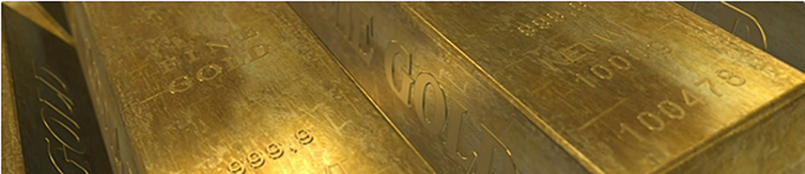
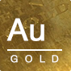
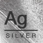

贵金属
通过GQFX进行交易，您可以接触多种贵金属对，包括使用黄金、白银。它们用于珠宝首饰和工业应用，并在市场动荡时作为避险资产 – 这些符号的变化往往与市场周期和通胀相符。
黄金和白银

GQFX在MT4平台上提供四个白银和黄金交叉。黄金和白银使用美元和欧元标价，交易方式与该平台上其他的货币对类似。
-

黄金
XAU/USD 是基于期货价格（可以在特定的时间点买入或卖出黄金）的现货商品对。现货黄金受供给和需求，以及美元风险的严重影响，在银行间市场中属于波动大但越来越受欢迎的商品。
-

白银
和黄金类似，XAG/USD 是基于期货价格（可以在特定的时间点买入或卖出白银）的现货商品对。鉴于白银通常用途是在珠宝和消费电子产品领域，所以供给和需求严重影响该商品对的波动。
贵金属是一种理想的资产，可多样化您的交易策略；作为一个全球市场，供需不会特别受任何一个国家的驱动，而是世界作为一个整体推动。您可以买入或卖出，以充分利用市场上涨和下跌，而无需缴纳任何额外的手续费。